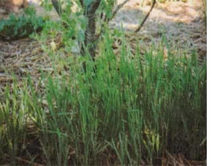

COUNTRY LORE
I have been interested in green manure crops for some time, but I couldn't figure out when a small garden could give up the space to grow a nonedible crop. This season, I found out.
Our garden was bombarded again and again with pests. Diligently, I would reseed the blank spots in the beds with any leftover seeds I had, but the seedlings kept getting attacked. Eventually, it was getting a little late in the season for starting anything new, so I filled in all of the blank spots with buckwheat, a green manure crop (and the only seeds I had left!).
It came up fast, getting established before any pests could get it. The grasshoppers nibbled some, but I was happy to have them there, rather than on the surviving vegetable plants. The buckwheat filled in the patches quickly and began to shade the ground and the existing plants (a real lifesaver in our hot, arid climate). Within a few weeks, it was producing masses of beautiful white flowers, which attracted lots of bees; the plots with the buckwheat hummed with pollination much more than did the plots without it.
When the plants matured, I gathered the seed for making sprouts in the winter and planting in the garden next spring. I tilled the leaves and stems into the garden plots, adding lots of organic matter and phosphorous to the soil. Now that I know how helpful green manure can be, I'll be sure to squeeze it onto next spring's planting roster, whether I have insect damage or not.
-Susan Grelock
Ash Fork, Arizona
|
 |
|
|